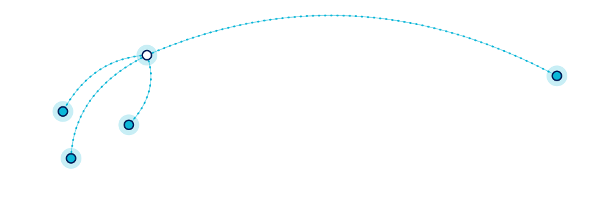

2인 1실 기숙 · 등하교 라이드 · 매일 2시간 방과후 학업관리 · 아카데믹 어드바이저 · SAT·GPA 관리 · 격달 리포트 · 학기별 대학 투어
졸업생 진학 대학* Yale · NYU · UT-Austin · Texas A&M 등
WHY INTO
인투유학은 학생이 현지에서 공부와 생활에 집중할 수 있도록 관리형으로 운영합니다.
미국 · 필리핀 · 말레이시아 · 태국 치앙마이 현지 팀이 학생과 학부모를 직접 맞이합니다.
HOW TO JOIN
조기유학은 상담 → 서류 준비 → 유학 준비(Prep) 과정 → 지원·등록(원서·비자) → 최종 점검·출국 순으로 진행합니다.
함께 도와드립니다
상담 문의
031-674-0316
· 시즌별 일정과 참가비는 상담 때 최신 안내 자료로 알려 드립니다.
· 현지 사정과 날씨에 따라 일정이 변경될 수 있습니다.
INTO GLOBAL EDUCATION
MORE THAN STUDY ABROAD
미국 · 필리핀 · 말레이시아 · 태국
현지 팀이 직접 관리하는 해외 교육
Explore your global future

KOREA한국 TEXAS미국 PHILIPPINES필리핀 MALAYSIA말레이시아 CHIANG MAI태국상담 문의 031-674-0316
ABOUT
인투유학은 미국·필리핀·말레이시아 현지 유학센터와 국내 학원을 연결해, 학생들의 캠프와 유학을 관리형으로 운영하는 회사입니다.
현지 네트워크
왜 텍사스인가
CAMP
인투유학 캠프는 학습과 생활 훈련입니다. 공부는 물론 생활 습관과 인성까지 함께 관리합니다.
미국 캠프는 만 5세부터 참가할 수 있고, 초등 4학년까지는 부모 동반이 필요합니다. 캠프 종류와 시즌별 일정은 상담 때 안내해 드리며, 좌석은 계약금 입금 순서대로 배정됩니다.
STUDY ABROAD
2인 1실 기숙 · 등하교 라이드 · 매일 2시간 방과후 학업관리 · 아카데믹 어드바이저 · SAT·GPA 관리 · 격달 리포트 · 학기별 대학 투어
졸업생 진학 대학* Yale · NYU · UT-Austin · Texas A&M 등
토플 집중부터 유학 실전 영어, 입학 행정까지. 월 2회 해외봉사로 리더십 포트폴리오도 함께 쌓습니다.
2년제 블린 칼리지에서 시작해 텍사스 A&M 편입을 준비합니다.
학교별 과정과 입학 조건은 상담 때 안내해 드립니다.
텍사스 입시 로드맵
* 진학 결과는 학교 안내 기준이며, 개별 결과는 성적·활동·지원 전략에 따라 달라질 수 있습니다. 입학·편입은 각 학교의 심사를 거칩니다.